| Estudiante | Camilo Andrés Hurtado Carvajal |
| Materia | Pruebas de Calidad de Software |
| Actividad | AA1 – Taller individual: scripts de prueba automatizados |
| Sistema bajo prueba | SimpleFood v1.0.0 (proyecto de Gestión del Software) |
| Repositorio | github.com/camilohurtado/simplefood · rama feature/pruebas-automatizadas |
| Fecha | 11 de noviembre de 2026 |
Este taller toma como caso de estudio SimpleFood, la aplicación web en Java 21 desarrollada en la materia Gestión del Software. SimpleFood expone una API REST (autenticación, menú, pedidos, reservas y caja) mediante un servidor HTTP embebido y una interfaz web estática. La línea base ya contaba con 23 pruebas unitarias y de integración en JUnit 5, pero no tenía pruebas funcionales automatizadas de interfaz de usuario ni una suite de API independiente del código, que son el foco de esta actividad.
| Script | Objeto de prueba | Herramienta | Resultado |
|---|---|---|---|
| Script 1 – Formulario web | Formulario de registro de clientes /registro.html, que consume POST /api/auth/registro. |
JUnit 5 + Selenium WebDriver 4.33 | 8 de 8 casos aprobados |
| Script 2 – API REST | Endpoints /api/auth/login y /api/reservas (crear, listar, cancelar) con control de roles. |
Postman (colección v2.1) + Newman 6.2 | 14 peticiones, 62 aserciones aprobadas |
registro.html, que usa el endpoint de registro ya existente y replica en el navegador las reglas de negocio de
AuthService.registrar (nombre obligatorio, correo válido, clave de al menos 6 caracteres). Los campos tienen
atributos id estables pensados para la automatización (diseño para la testabilidad).| Componente | Versión | Uso en el taller |
|---|---|---|
| Java (Amazon Corretto) | 21.0.8 | Lenguaje del sistema y de los scripts JUnit/Selenium. |
| Apache Maven | 3.9.3 | Compilación, gestión de dependencias y ejecución (mvn test, perfil e2e). |
| JUnit Jupiter | 5.10.3 | Motor de pruebas: ciclo de vida, @Tag, @DisplayName, pruebas parametrizadas, assertAll. |
| Selenium WebDriver | 4.33.0 | Automatización del navegador. Selenium Manager descarga el chromedriver compatible. |
| Google Chrome | 157 (modo headless) | Navegador donde se ejecuta el formulario. |
| Postman (formato colección v2.1) | — | Diseño de la colección de pruebas de API; importable en la aplicación Postman. |
| Newman + newman-reporter-htmlextra | 6.2.3 / 1.23.1 | Ejecución de la colección por línea de comandos y reportes HTML/JUnit. |
| Node.js / npm | 20.19.5 | Entorno de ejecución de Newman (npm test). |
| Git / GitHub | — | Control de versiones; trabajo en la rama feature/pruebas-automatizadas. |
| Sistema operativo | macOS (Darwin 25) | Equipo de desarrollo y ejecución. |
simplefood/ ├── pom.xml # + selenium-java, perfil e2e, filtros por @Tag ├── src/main/resources/public/ │ ├── index.html # + enlace "Registrarse" │ └── registro.html # NUEVO: formulario web bajo prueba ├── src/test/java/com/simplefood/e2e/ │ ├── BaseE2ETest.java # servidor embebido, navegador, capturas │ ├── RegistroClienteE2ETest.java # SCRIPT 1: casos de prueba del formulario │ └── paginas/RegistroPage.java # Page Object del formulario ├── pruebas/postman/ │ ├── SimpleFood_API.postman_collection.json # SCRIPT 2: colección de pruebas de API │ ├── local.postman_environment.json # variables de entorno (URL, credenciales demo) │ └── package.json # npm test -> newman run ... (cli, htmlextra, junit) └── docs/taller-aa1/ # este documento y sus evidencias
Se siguió el mismo proceso para ambos scripts, inspirado en el proceso de pruebas fundamental de ISTQB (análisis → diseño → implementación → ejecución → cierre):
Rutas.java, AuthService.java y
ReservaService.java para extraer las reglas de negocio reales: validaciones del registro, horario de reservas
(11:00 a 21:00), número de personas (1 a 12), reservas solo en fechas futuras, permisos por rol y el mapeo de errores
a códigos HTTP (Sesion… → 401, Acceso… → 403, resto de reglas → 400).| Id | Requisito (extraído del código) | Casos que lo verifican |
|---|---|---|
| RF-01 | Un visitante puede registrarse como cliente con nombre, correo válido y clave de mínimo 6 caracteres. | CP-WEB-01, 02, 04, 05 |
| RF-02 | No se permite registrar dos veces el mismo correo. | CP-WEB-03 |
| RF-03 | El inicio de sesión entrega un token de sesión y el rol del usuario. | CP-API-01, 02, 03 |
| RF-04 | Un cliente autenticado puede reservar mesa en fecha futura, de 11:00 a 21:00, para 1 a 12 personas. | CP-API-04, 07, 09–13 |
| RF-05 | Solo meseros y administradores consultan las reservas del día. | CP-API-05, 08 |
| RF-06 | Un cliente puede cancelar sus propias reservas. | CP-API-06, 14 |
El formulario /registro.html tiene cuatro campos (nombre, correo, clave y confirmación) y un botón «Crear cuenta».
Al enviar, valida los datos en el navegador; si son válidos llama a POST /api/auth/registro y muestra una alerta de
éxito (y limpia el formulario) o la alerta de error devuelta por el servidor.
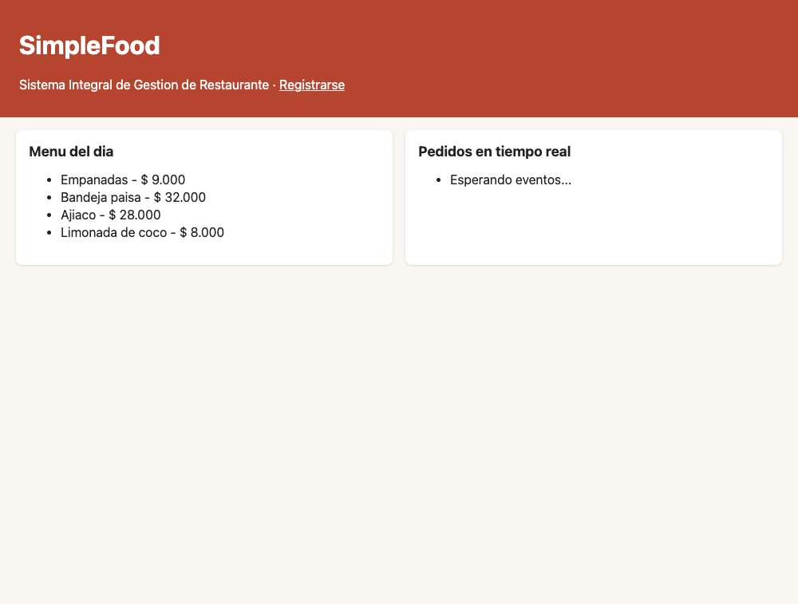
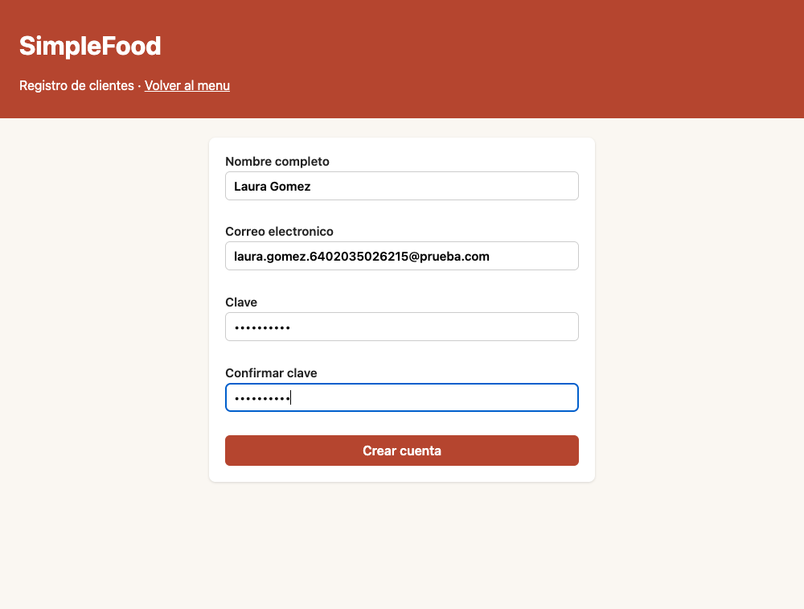
| Id | Caso | Datos de entrada | Resultado esperado | Estado |
|---|---|---|---|---|
| CP-WEB-01 | Navegación al formulario | Clic en «Registrarse» desde / | Se carga /registro.html con el botón «Crear cuenta». | Aprobado |
| CP-WEB-02 | Registro exitoso | Laura Gomez · correo único · secreta123 ×2 | Alerta verde «Bienvenido, Laura Gomez. Tu cuenta de cliente fue creada.», formulario limpio y el usuario puede iniciar sesión en el backend. | Aprobado |
| CP-WEB-03 | Correo duplicado | cliente@simplefood.com (ya existe) | Alerta roja con el error de la API: «El correo ya esta registrado». | Aprobado |
| CP-WEB-04 [1] | Nombre vacío | nombre = «» | «El nombre es obligatorio», campo marcado inválido, no se llama a la API ni se crea el usuario. | Aprobado |
| CP-WEB-04 [2] | Correo inválido | ana-sin-arroba | «Ingrese un correo valido», ídem. | Aprobado |
| CP-WEB-04 [3] | Clave corta (valor límite) | 12345 (5 caracteres) | «La clave debe tener al menos 6 caracteres», ídem. | Aprobado |
| CP-WEB-04 [4] | Claves distintas | clave12 / clave99 | «Las claves no coinciden», ídem. | Aprobado |
| CP-WEB-05 | Formulario vacío | Ningún dato | Nombre, correo y clave marcados como inválidos. | Aprobado |
+----------------------------------+ hereda +--------------------------------------+
| RegistroClienteE2ETest |--------->| BaseE2ETest @Tag("e2e") |
| - casos CP-WEB-01 a CP-WEB-05 | | - @BeforeAll: levanta ServidorWeb |
| - solo describe QUE se prueba | | en puerto libre con datos demo |
+----------------------------------+ | - @BeforeEach: Chrome headless |
| usa | - @AfterEach: captura final, quit() |
v | - capturar(), correoUnico() |
+----------------------------------+ +--------------------------------------+
| RegistroPage (Page Object) |
| - localizadores By.id(...) | WebDriver +--------+ HTTP /registro.html
| - acciones: llenar(), enviar() |--------------->| Chrome |-------> POST /api/auth/registro
| - consultas con esperas | +--------+
| explicitas (WebDriverWait) |
+----------------------------------+
La prueba levanta el servidor real de SimpleFood dentro de la misma JVM, en un puerto libre (puerto 0), por lo que no depende de un ambiente externo y puede verificar efectos en el backend (por ejemplo, que el usuario creado pueda iniciar sesión). Cada caso abre un navegador nuevo, garantizando independencia entre pruebas.
Page Object (RegistroPage.java, extracto): encapsula localizadores y acciones; si cambia el HTML solo se ajusta esta clase.
public class RegistroPage { public static final String RUTA = "/registro.html"; private static final By NOMBRE = By.id("nombre"); private static final By CORREO = By.id("correo"); private static final By BOTON_REGISTRAR = By.id("btn-registrar"); private static final By ALERTA = By.id("alerta"); ... public RegistroPage abrir(String urlBase) { driver.get(urlBase + RUTA); espera.until(ExpectedConditions.visibilityOfElementLocated(BOTON_REGISTRAR)); return this; } /** Atajo para llenar todo el formulario con la misma clave en ambos campos. */ public RegistroPage llenar(String nombre, String correo, String clave) { return conNombre(nombre).conCorreo(correo).conClave(clave).conConfirmacion(clave); } /** Espera a que el servidor responda y la alerta sea visible; devuelve su texto. */ public String mensajeAlerta() { return espera.until(ExpectedConditions.visibilityOfElementLocated(ALERTA)).getText(); } }
Caso de prueba de registro exitoso (RegistroClienteE2ETest.java): patrón Preparar–Actuar–Verificar,
assertAll para reportar todas las fallas juntas y verificación cruzada contra el backend.
@Test @DisplayName("CP-WEB-02 Registro exitoso muestra bienvenida, limpia el formulario y crea el usuario") void registroExitoso() { String correo = correoUnico("laura.gomez"); // datos únicos: prueba repetible RegistroPage pagina = new RegistroPage(driver).abrir(urlBase()) .llenar("Laura Gomez", correo, "secreta123"); capturar("formulario_diligenciado"); String mensaje = pagina.enviar().mensajeAlerta(); capturar("mensaje_exito"); assertAll( () -> assertTrue(pagina.alertaEsDeExito(), "La alerta debe ser de exito"), () -> assertEquals("Bienvenido, Laura Gomez. Tu cuenta de cliente fue creada.", mensaje), () -> assertEquals("", pagina.valorDe("correo"), "El formulario debe limpiarse"), // Verificacion en el backend: el usuario puede iniciar sesion con la clave registrada () -> assertDoesNotThrow(() -> contexto.auth().iniciarSesion(correo, "secreta123"))); }
Prueba parametrizada guiada por datos: un solo método cubre las cuatro clases de equivalencia inválidas. Agregar un caso nuevo es agregar una fila.
@ParameterizedTest(name = "[{index}] {5}") @CsvSource(delimiter = '|', textBlock = """ # nombre | correo | clave | confirmacion | campo | mensaje esperado '' | ana@prueba.com | clave12 | clave12 | nombre | El nombre es obligatorio Ana Ruiz | ana-sin-arroba | clave12 | clave12 | correo | Ingrese un correo valido Ana Ruiz | ana@prueba.com | 12345 | 12345 | clave | La clave debe tener al menos 6 caracteres Ana Ruiz | ana@prueba.com | clave12 | clave99 | confirmacion | Las claves no coinciden """) void validacionesDelCliente(String nombre, String correo, String clave, String confirmacion, String campo, String mensajeEsperado) { RegistroPage pagina = new RegistroPage(driver).abrir(urlBase()) .conNombre(nombre).conCorreo(correo).conClave(clave).conConfirmacion(confirmacion).enviar(); capturar("validacion_" + campo); assertAll( () -> assertEquals(mensajeEsperado, pagina.errorDeCampo(campo)), () -> assertTrue(pagina.campoMarcadoInvalido(campo)), () -> assertFalse(pagina.alertaVisible(), "No debe llamarse a la API"), () -> assertThrows(NegocioException.class, () -> contexto.auth().iniciarSesion(correo, clave), "El usuario no debe haberse creado")); }
Configuración Maven: las pruebas de interfaz se etiquetan con @Tag("e2e") y solo corren con el perfil
e2e; así mvn test sigue siendo rápido y no exige un navegador instalado.
<plugin> maven-surefire-plugin 3.2.5 <groups>${grupos.incluidos}</groups> <!-- por defecto: todas --> <excludedGroups>${grupos.excluidos}</excludedGroups> <!-- por defecto: e2e --> <profile> <id>e2e</id> <!-- mvn test -Pe2e : grupos.incluidos=e2e, grupos.excluidos=(vacío) -->
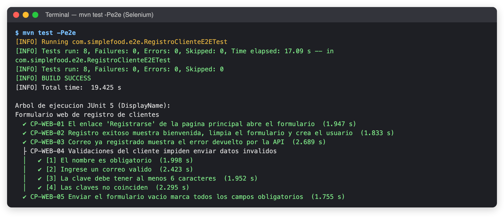
mvn test -Pe2e: 8 pruebas, 0 fallas. El árbol muestra el @DisplayName y el tiempo de cada caso tomados del reporte de Surefire.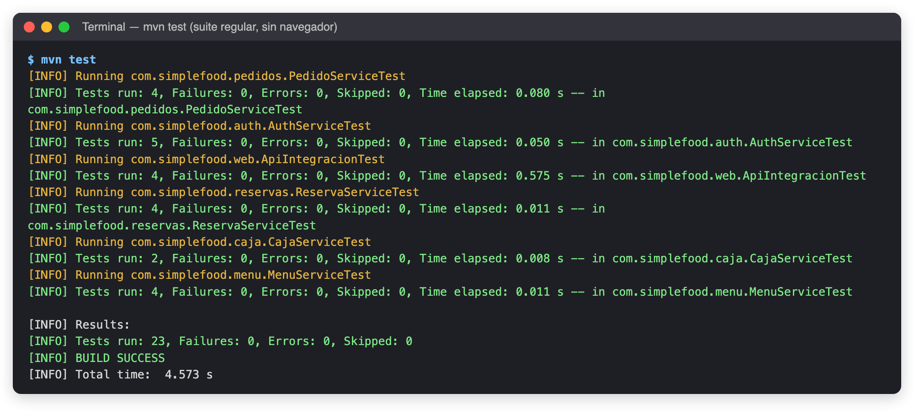
mvn test sin perfil: las 23 pruebas existentes siguen pasando y las pruebas e2e quedan excluidas.Capturas de pantalla tomadas automáticamente por el script (BaseE2ETest.capturar) en cada caso:
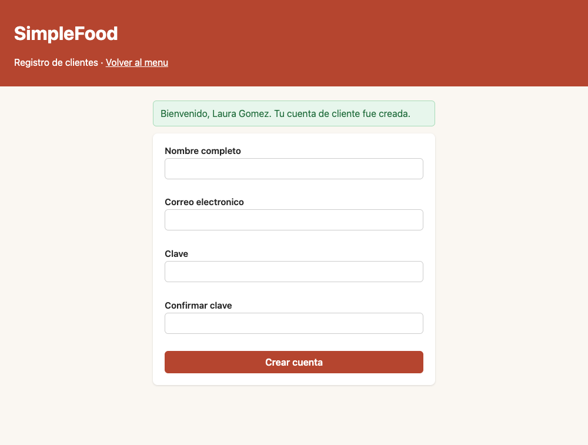
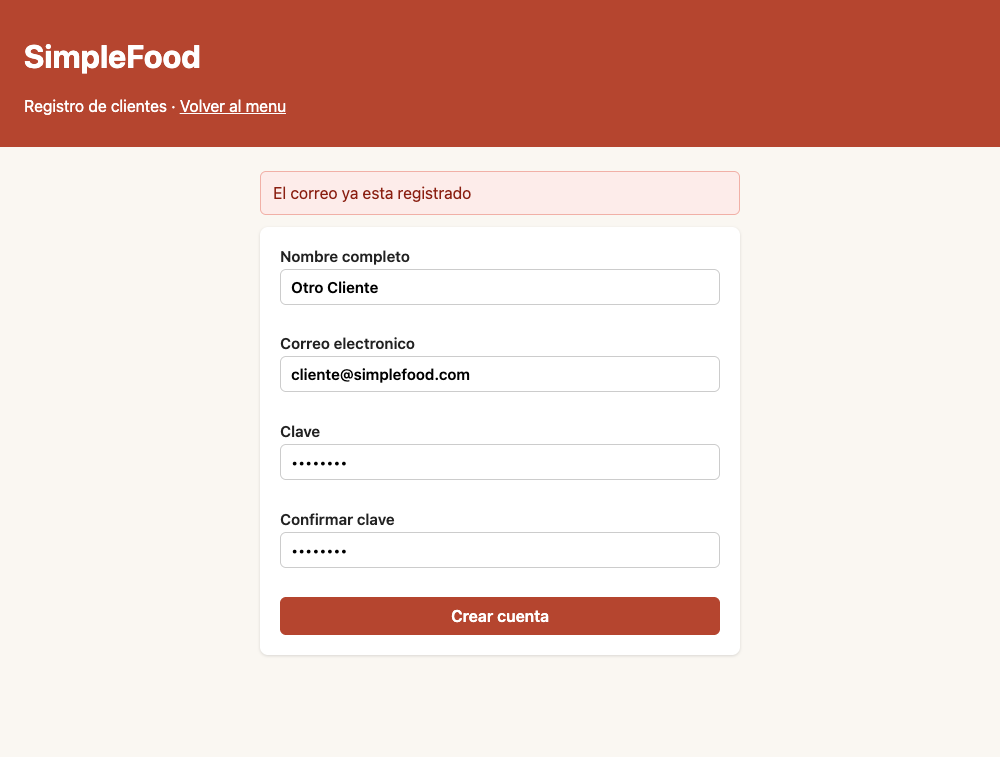
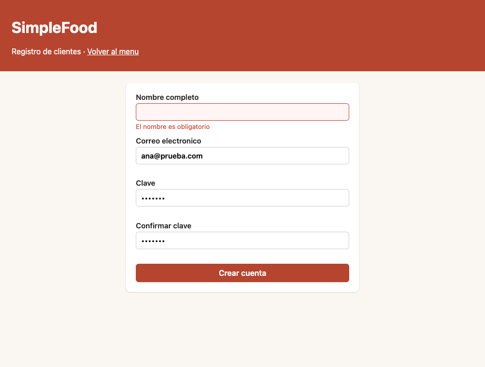
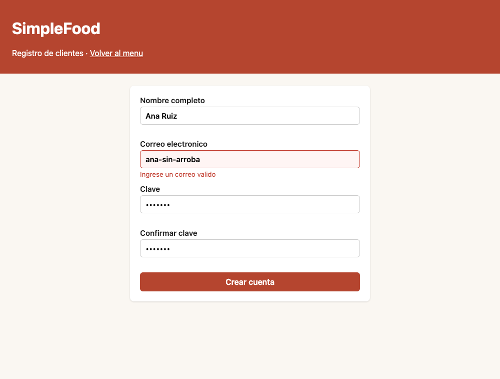
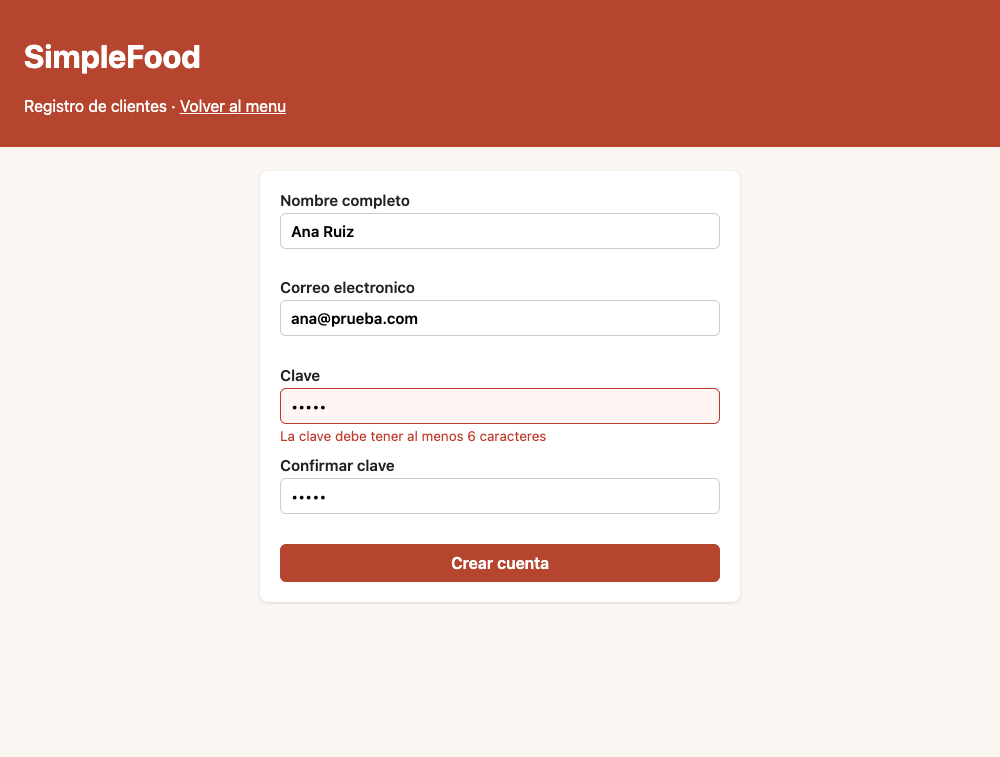
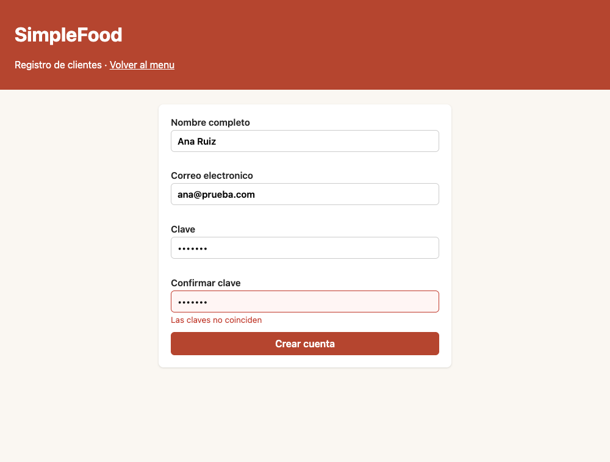
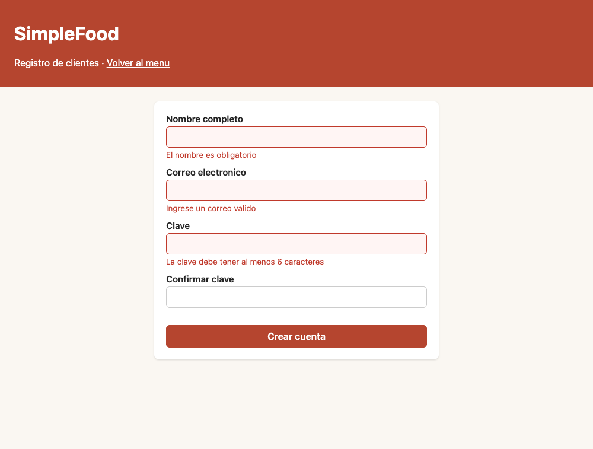
Una suite que siempre pasa no demuestra nada si no es capaz de fallar. Para validarla se introdujo a propósito un defecto en
registro.html: la regla de longitud mínima de la clave se cambió de >= 6 a >= 5
(un error típico de «uno por fuera»). El caso de valor límite CP-WEB-04 [3] lo detectó de inmediato y, gracias a
assertAll, reportó las tres consecuencias del defecto: no aparece el mensaje, el campo no se marca como inválido y
el formulario sí llamó a la API. Después se restauró el código y la suite volvió a quedar en verde.
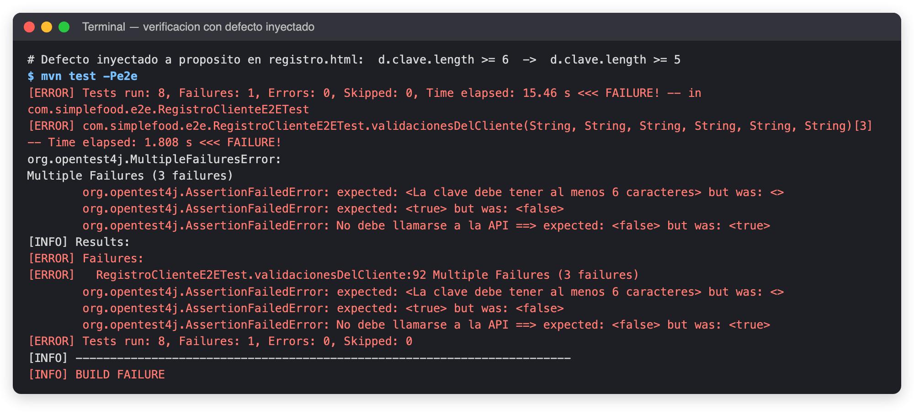
| Método | Ruta | Descripción | Rol requerido |
|---|---|---|---|
| POST | /api/auth/login | Recibe correo y clave; devuelve token y usuario. | Público |
| POST | /api/reservas | Crea una reserva {"fechaHora","personas"} y asigna mesa. | Cliente / Admin |
| GET | /api/reservas?fecha=aaaa-mm-dd | Lista las reservas del día. | Mesero / Admin |
| DELETE | /api/reservas/{id} | Cancela una reserva (el cliente solo las propias). | Autenticado |
| Id | Petición | Verificaciones (además de tiempo < 1000 ms y Content-Type JSON) | Estado |
|---|---|---|---|
| CP-API-01 | Login cliente válido | 200; token de más de 20 caracteres; rol CLIENTE; correo correcto; la respuesta no contiene «clave». Guarda tokenCliente. | Aprobado |
| CP-API-02 | Login mesero válido | 200; rol MESERO. Guarda tokenMesero. | Aprobado |
| CP-API-03 | Login con clave incorrecta | 400 «Credenciales invalidas»; no entrega token. | Aprobado |
| CP-API-04 | Cliente crea reserva (hoy+3, 19:30, 4 personas) | 201; cumple el esquema JSON de Reserva; estado CONFIRMADA; datos iguales a los enviados. Guarda reservaId. | Aprobado |
| CP-API-05 | Mesero consulta reservas del día | 200; es una lista; incluye reservaId; todas son del día consultado. | Aprobado |
| CP-API-06 | Cliente cancela su reserva | 200; estado CANCELADA; mismo id. | Aprobado |
| CP-API-07 | Crear reserva sin token | 401 «Sesion no valida». | Aprobado |
| CP-API-08 | Cliente lista reservas | 403 «Acceso denegado para el rol CLIENTE». | Aprobado |
| CP-API-09 | Reserva en fecha pasada (ayer) | 400 «La reserva debe ser en una fecha futura». | Aprobado |
| CP-API-10 | Reserva a las 23:00 | 400 «Horario de reservas: 11:00 a 21:00». | Aprobado |
| CP-API-11 | 13 personas (límite superior + 1) | 400 «Numero de personas invalido (1 a 12)». | Aprobado |
| CP-API-12 | 0 personas (límite inferior − 1) | 400 «Numero de personas invalido (1 a 12)». | Aprobado |
| CP-API-13 | Formato de fecha inválido | 400 «Fecha y hora invalidas, use aaaa-mm-ddThh:mm». | Aprobado |
| CP-API-14 | Cancelar reserva inexistente | 400 «Reserva no encontrada: 999999». | Aprobado* |
* Observación de calidad: la API responde 400 Bad Request cuando el recurso no existe. El script documenta el
comportamiento actual, pero semánticamente lo correcto sería 404 Not Found. Se registra como mejora sugerida para
ServidorWeb.api, que hoy solo distingue 401, 403 y 400.
local.postman_environment.json): baseUrl y credenciales de demostración. Para probar otro ambiente basta con otro archivo de entorno; la colección no cambia.Bearer {{tokenCliente}}, /api/reservas/{{reservaId}}).Script de pruebas a nivel de colección (se ejecuta tras cada petición):
// ---- Aserciones comunes a TODAS las peticiones ---- const limite = Number(pm.collectionVariables.get("tiempoMaximoMs")); pm.test("[comun] Responde en menos de " + limite + " ms", () => { pm.expect(pm.response.responseTime).to.be.below(limite); }); pm.test("[comun] Content-Type es JSON", () => { pm.expect(pm.response.headers.get("Content-Type")).to.include("application/json"); }); // ---- Verificacion declarativa de casos negativos ---- const estado = pm.variables.get("esperadoEstado"); const error = pm.variables.get("esperadoError"); if (estado) pm.test("[negativo] Codigo HTTP " + estado, () => pm.response.to.have.status(Number(estado))); if (error) pm.test("[negativo] Mensaje de error: " + error, () => pm.expect(pm.response.json().error).to.eql(error));
Un caso negativo completo (pre-request de «Reserva para 13 personas»): solo los datos, sin lógica repetida.
POST {{baseUrl}}/api/reservas Authorization: Bearer {{tokenCliente}}
{ "fechaHora": "{{fechaReserva}}", "personas": 13 }
pm.variables.set("esperadoEstado", 400);
pm.variables.set("esperadoError", "Numero de personas invalido (1 a 12)");
Caso positivo con validación de esquema y encadenamiento («Cliente crea reserva»):
pm.test("Codigo HTTP 201 Created", () => pm.response.to.have.status(201)); const esquema = { type: "object", required: ["id", "clienteId", "fechaHora", "personas", "mesa", "estado"], properties: { id: { type: "integer", minimum: 1 }, mesa: { type: "integer", minimum: 1 }, fechaHora: { type: "string", pattern: "^\\d{4}-\\d{2}-\\d{2}T\\d{2}:\\d{2}" }, estado: { enum: ["CONFIRMADA", "CANCELADA"] }, ... } }; pm.test("Cumple el esquema JSON de Reserva", () => pm.response.to.have.jsonSchema(esquema)); const r = pm.response.json(); pm.test("Queda CONFIRMADA con los datos enviados", () => { pm.expect(r.estado).to.eql("CONFIRMADA"); pm.expect(r.personas).to.eql(4); pm.expect(r.fechaHora).to.eql(pm.collectionVariables.get("fechaReserva")); }); pm.collectionVariables.set("reservaId", r.id); // usado por consultar y cancelar
Ejecución automatizada (pruebas/postman/package.json):
"test": "newman run SimpleFood_API.postman_collection.json -e local.postman_environment.json -r cli,htmlextra,junit --reporter-htmlextra-export reportes/reporte-api.html --reporter-junit-export reportes/junit-api.xml"
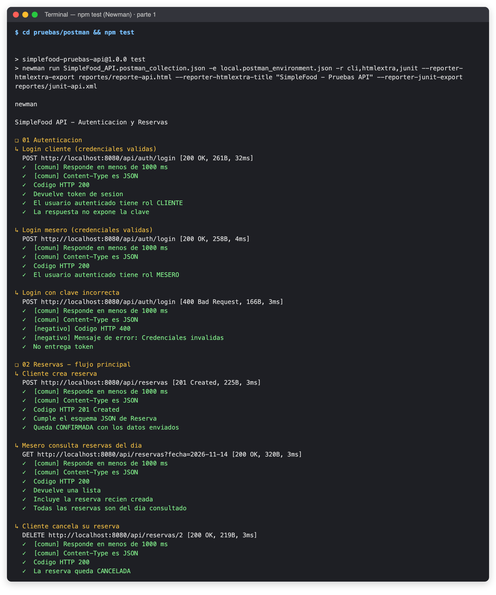
npm test (Newman), parte 1: autenticación y flujo principal de reservas.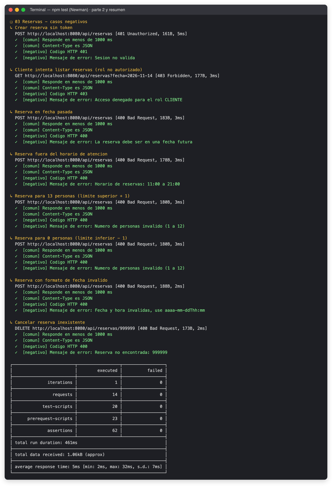
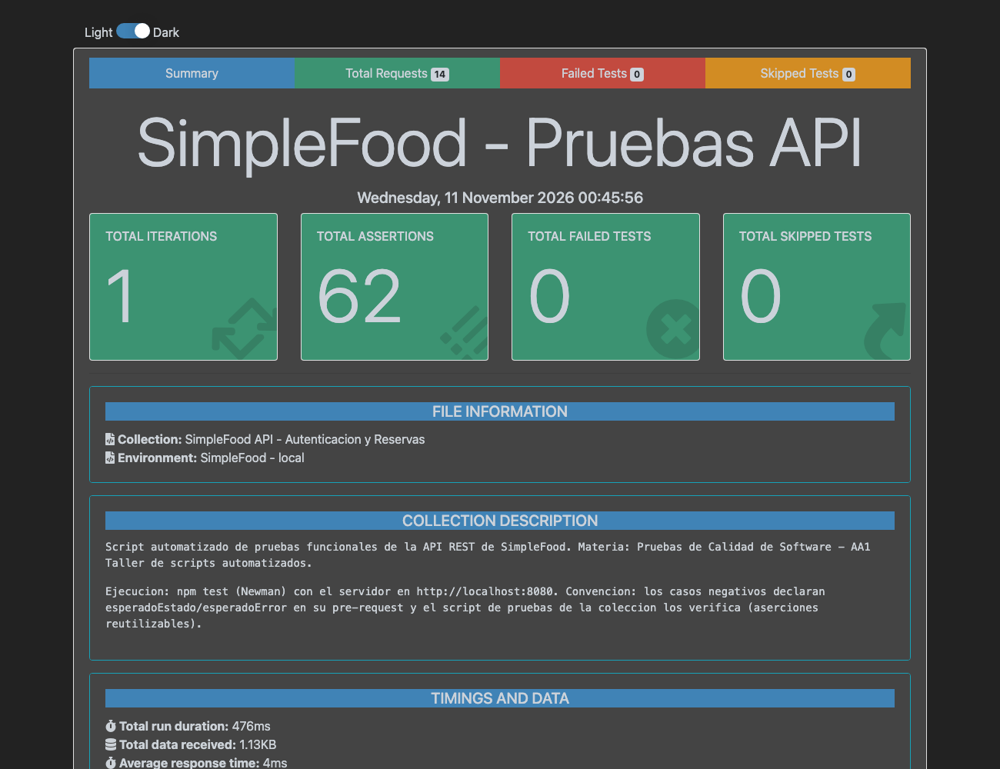
reportes/reporte-api.html).La colección se ejecutó dos veces seguidas contra el mismo servidor con el mismo resultado (62/62), lo que confirma que es repetible: la reserva creada se cancela al final del flujo y las fechas se recalculan en cada ejecución.
En la primera ejecución, 6 aserciones fallaron en el flujo principal, que no tenía expectativas negativas:
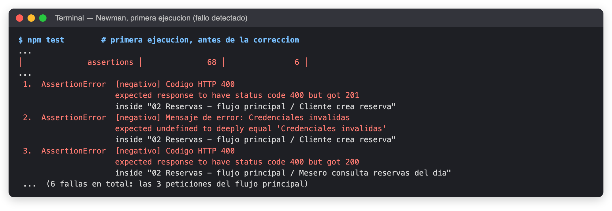
Causa: en Newman las variables definidas con pm.variables.set persisten durante toda la ejecución,
así que la expectativa declarada por «Login con clave incorrecta» se filtró a las peticiones siguientes. Corrección:
el pre-request de la colección, que se ejecuta antes del de cada petición, limpia las expectativas:
// Las expectativas de casos negativos aplican solo a la peticion que las declara pm.variables.unset("esperadoEstado"); pm.variables.unset("esperadoError");
La lección es que los scripts de prueba también son software y pueden tener defectos: las pruebas deben ser independientes y no compartir estado de forma implícita. Que la suite fallara en rojo, y no que pasara en silencio, permitió detectarlo.
| Práctica | Cómo se aplicó |
|---|---|
| Separación de responsabilidades | Infraestructura (BaseE2ETest), interacción con la UI (RegistroPage) y casos (RegistroClienteE2ETest) en clases distintas. En Postman: entorno, colección y aserciones comunes separados. |
| Page Object Model | Los casos no contienen localizadores; un cambio en el HTML se corrige en un solo lugar. API fluida (llenar(...).enviar()). |
| Localizadores robustos | Se usan id estables agregados al diseñar el formulario, en vez de XPath frágiles dependientes de la estructura. |
| Esperas explícitas | WebDriverWait + ExpectedConditions en lugar de Thread.sleep: pruebas más rápidas y sin intermitencia. |
| Independencia y repetibilidad | Navegador nuevo por caso, servidor en puerto libre, correos únicos, fechas dinámicas y limpieza de variables entre peticiones. |
| Pruebas guiadas por datos | @ParameterizedTest + @CsvSource; casos negativos declarativos en Postman. |
| No duplicar (DRY) | Aserciones comunes a nivel de colección; utilidades capturar() y correoUnico() en la clase base. |
| Nombres descriptivos y trazabilidad | Cada prueba tiene un id (CP-WEB-xx / CP-API-xx) y un nombre que describe el comportamiento esperado; matriz de trazabilidad con los requisitos. |
| Mensajes de falla útiles | Mensajes en las aserciones («No debe llamarse a la API») y assertAll para ver todas las fallas de un caso a la vez. |
| Verificar el efecto, no solo la pantalla | El registro exitoso se confirma también en el backend (el usuario puede iniciar sesión); los casos inválidos confirman que el usuario no se creó. |
| Evidencia automática | Capturas numeradas por caso, reporte HTML y JUnit XML (consumible por un servidor de integración continua). |
| Pruebas lentas aisladas | @Tag("e2e") + perfil Maven: la suite unitaria sigue tardando segundos y no requiere navegador. |
| Datos sensibles fuera del script | Credenciales en el archivo de entorno, marcadas como tipo secret. |
| Control de versiones | Rama feature/pruebas-automatizadas y commits pequeños que referencian la materia. |
chromedriver: Selenium Manager lo resuelve automáticamente.git clone https://github.com/camilohurtado/simplefood.git cd simplefood && git checkout feature/pruebas-automatizadas mvn test # 23 pruebas unitarias/integración (sin navegador) mvn test -Pe2e # 8 pruebas Selenium en Chrome headless mvn test -Pe2e -Dheadless=false # igual, pero viendo el navegador # Evidencias: target/evidencias/selenium/NN_metodo_etiqueta.png # Reportes: target/surefire-reports/
Qué ocurre internamente: (1) JUnit filtra las clases con @Tag("e2e"); (2) @BeforeAll
crea un Contexto con datos demo y levanta ServidorWeb en un puerto libre; (3) por cada caso,
@BeforeEach abre Chrome headless (1000×900); (4) el caso usa RegistroPage para interactuar y
verifica la UI y el backend; (5) @AfterEach guarda una captura del estado final y cierra el navegador;
(6) @AfterAll detiene el servidor.
mvn package && java -jar target/simplefood-1.0.0.jar # terminal 1: servidor en :8080 cd pruebas/postman # terminal 2 npm install # newman + reporter htmlextra npm test # Reportes: pruebas/postman/reportes/reporte-api.html y junit-api.xml # Alternativa manual: importar la colección y el entorno en Postman y usar "Run collection".
Qué ocurre internamente: por cada petición Newman ejecuta (1) el pre-request de la colección (limpia expectativas y calcula fechas), (2) el pre-request de la petición (declara expectativas negativas si aplica), (3) la llamada HTTP con las variables resueltas, (4) el script de pruebas de la colección (aserciones comunes) y (5) el de la petición (aserciones específicas y guardado de variables para las siguientes).
Ambos scripts producen reportes JUnit XML y terminan con código de salida distinto de cero si algo falla, así que pueden
ejecutarse en un pipeline (por ejemplo, GitHub Actions) en cada pull request hacia main: primero
mvn test (rápido), luego mvn test -Pe2e y Newman contra el servidor recién empaquetado, bloqueando la
integración si alguna prueba falla.
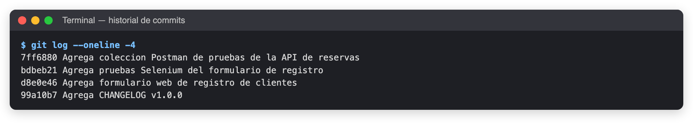
feature/pruebas-automatizadas; cada mensaje referencia la materia Pruebas de Calidad de Software.Construir estos dos scripts sobre un sistema propio dejó varias conclusiones concretas, más allá de la teoría.
La automatización convierte la verificación en algo barato y repetible. Diligenciar a mano el formulario con ocho combinaciones de datos, o lanzar catorce peticiones en Postman revisando códigos y mensajes uno por uno, toma varios minutos y es propenso a errores de atención. Las mismas verificaciones automatizadas tardan unos 17 segundos (Selenium) y menos de medio segundo (Newman), y se pueden repetir después de cada cambio sin costo adicional. Eso habilita las pruebas de regresión: cuando alguien modifique las reglas de registro o de reservas, la suite avisará si se rompió un comportamiento existente.
Una prueba solo vale si es capaz de fallar. El experimento del defecto inyectado (cambiar >= 6 por
>= 5) mostró que el caso de valor límite detecta un error que a simple vista pasaría desapercibido, y que los mensajes de
falla indican exactamente qué se rompió. Sin ese caso límite, el defecto habría llegado a producción.
El código de prueba también es software y tiene defectos. El falso positivo de la colección de Postman (estado compartido entre peticiones) muestra que los scripts necesitan el mismo cuidado de diseño que el código de producción: independencia entre casos, nombres claros, poca duplicación. Por eso se invirtió en la estructura (Page Object, clase base, aserciones comunes): el costo inicial es mayor, pero el mantenimiento posterior es mucho menor.
Automatizar obliga a pensar en la testabilidad y aporta hallazgos de calidad. Diseñar el formulario con identificadores estables y mensajes claros facilitó tanto las pruebas como la accesibilidad. Además, al escribir las aserciones se detectó que la API responde 400 en lugar de 404 para recursos inexistentes, una inconsistencia que una prueba manual rápida probablemente no habría registrado.
Sus límites. Las pruebas automatizadas no reemplazan la exploración manual ni el criterio humano: verifican solo lo que se les indicó comprobar (no detectan, por ejemplo, un problema de diseño visual o de usabilidad), requieren mantenimiento cuando la interfaz cambia y las pruebas de interfaz son más lentas y frágiles que las de API o unitarias. Por eso conviene seguir la pirámide de pruebas: muchas pruebas unitarias (SimpleFood tiene 23), un conjunto mediano de pruebas de API/servicio (la colección de 14 peticiones) y pocas pruebas end-to-end de interfaz enfocadas en los flujos críticos (los 8 casos del formulario).
En resumen, la automatización no busca eliminar al probador, sino liberarlo de la verificación repetitiva para que dedique su tiempo a diseñar mejores casos y a explorar lo que todavía no está cubierto.
404 cuando una reserva no existe.feature/pruebas-automatizadas, listos para integrarse a un pipeline de CI.assertAll). https://junit.org/junit5/docs/current/user-guide/